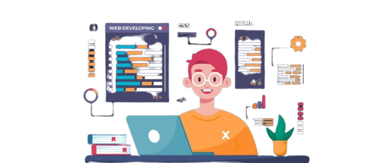

Olá Mundo!
Esse é o JAVASCRIPT STARTER PACK, um que site reúne alguns projetos básicos utilizando Javascript que desenvolvi durante meu primeiro ano de aprendizado em desenvolvimento frontend.
Alguns projetos são bem comuns para quem começando na carreira, é verdade. Tenho certeza que você já se deparou por aí com algum conversor de moedas ou calculado de IMC. Mas a ideia é utilizar esses conceitos e desenvolver um código do zero. Dessa vez não teve CTRL+C e CTRL+V.
São utilizados conceitos como manipulação de DOM, validação de formulários, requisições HTTP, além dos princípios básicos de desenvolvimento web aplicados ao HTML e CSS.
Sobre Mim
Graduando em Engenharia de Software aos 35 anos após 11 trabalhando na minha primeira área de formação. Decidi embarcar nessa jornada em busca do crescimento profissional que não vislumbrava no setor público. Nesse período como treinador esportivo desenvolvi minhas habilidades de comunicação, liderança e análise crítica. Nos estudos estou me dedicando, atualmente, ao DESENVOLVIMENTO FRONTEND (utilizando prioritariamente REACTJS no Javascript e Typescript) e CIÊNCIA DE DADOS (com Python e MySQL).